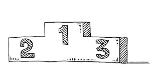

Vajon tényleg igaz? Tényleg lehetséges?? A zerkesztőink azt a hírt kapták hogy lehet hogy csalás történt a 2025-ös UNESCO-n. Az a hír járja hogy az egyik zsűri tanárnak (megkérte hogy ne említsük név szerint mert az érintett osztályokat tanítja) az unokaöccse volt az egyik nyertes osztályba járó E-s diák. Lehet hopgy ezért nyertek?? Mert amennyiben igen akkor módosul az eredmény, mert ez, ugye csalásnak számít. Így elég sok esély van rá hogy az idei UNESCO-t az F osztály nyerte. az az érdekes ebben az infóban hogy, mindezt egy UNESCO-n résztvevő E-s diák mondta, aki nem mellesleg a zsűri unokaöccse.
